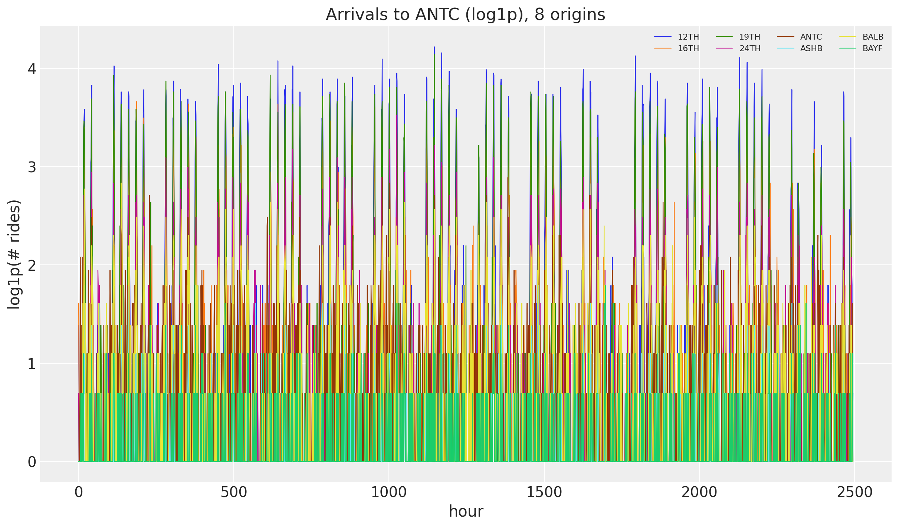
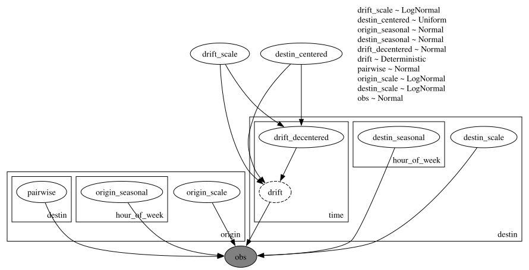
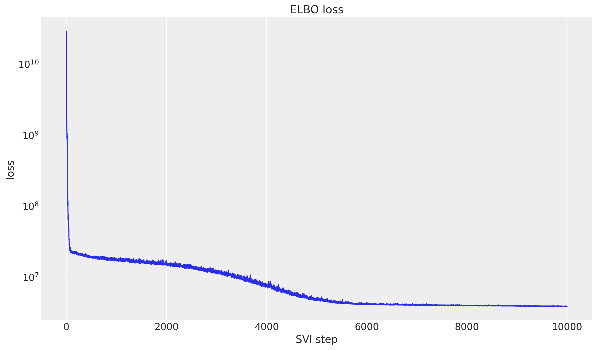
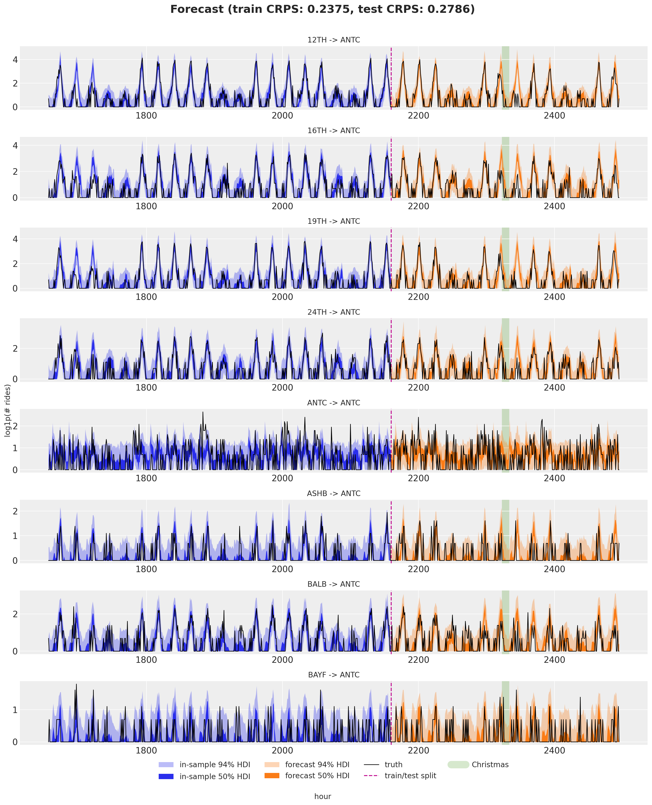

from typing import cast
import arviz as az
import jax.numpy as jnp
import matplotlib.pyplot as plt
import numpy as np
import numpyro
import numpyro.distributions as dist
import pandas as pd
import xarray as xr
from jax import random
from jax.tree_util import tree_map
from numpyro.infer import Predictive
from numpyro.infer.reparam import LocScaleReparam
from numpyro.optim import Adam
from numpyro_forecast import Forecaster, ForecastingModel, eval_crps
from numpyro_forecast.datasets import load_bart_hierarchical
from numpyro_forecast.typing import Array
from numpyro_forecast.util import periodic_repeat
az.style.use("arviz-darkgrid")
plt.rcParams["figure.figsize"] = [12, 7]
plt.rcParams["figure.dpi"] = 100
plt.rcParams["figure.facecolor"] = "white"
numpyro.set_host_device_count(n=4)
rng_key = random.PRNGKey(seed=42)
%load_ext autoreload
%autoreload 2
%load_ext jaxtyping
%jaxtyping.typechecker beartype.beartype
%config InlineBackend.figure_format = "retina"Hierarchical forecasting II
Hierarchical forecasting II with numpyro_forecast
This notebook ports the blog post Hierarchical forecasting with NumPyro (part II) to the numpyro_forecast package. This example is by itelf a port of the second part of the original Pyro example: Forecasting III: hierarchical models. Where part I fixed a single destination, here we model the full 50x50 origin-destination panel at once. Rides flow between station pairs with clear asymmetries, so we let the local-level dynamic be driven by the destination, build the seasonal effect and the noise scale from both an origin and a destination part, and add a static pairwise term for the affinity of each origin-destination pair.
Note on reproducibility. We match the blog’s data, seed, optimizer and step counts. Results reproduce the blog’s behavior and CRPS magnitude but are not bit-for-bit identical: the forecast horizon uses the package’s separate-
_future-site mechanism rather than re-running the guide over the full covariates. Because the full panel is large, predictive draws are done in memory-bounded batches.
Prepare notebook
Read data
We load the full windowed origin-destination panel (log1p counts, 90 training days plus 2 test weeks) in the package convention (origin, time, destin), with time at axis -2. This is the same dataset as part I, but now we keep every destination instead of slicing one out.
y, split, stations = load_bart_hierarchical()
n_origin, _, n_destin = y.shape
print("data shape:", y.shape, "| split:", split)
antc = stations.index("ANTC")
fig, ax = plt.subplots()
for i in range(8):
ax.plot(np.asarray(y[i, :, antc]), lw=0.8, label=stations[i])
ax.legend(ncol=4, fontsize=8)
ax.set(title="Arrivals to ANTC (log1p), 8 origins", xlabel="hour", ylabel="log1p(# rides)");data shape: (50, 2496, 50) | split: 2160
Train-test split
As before, the last two weeks (336 hours) are held out for testing. The covariates are dummy zeros over the whole panel: only their shape is read, to separate the in-sample window from the forecast horizon.
T0 = 0
T1 = split # 2_160
T2 = y.shape[1] # 2_496
y_train = y[:, T0:T1, :]
y_test = y[:, T1:T2, :]
covariates = jnp.zeros((n_origin, T2, n_destin))
covariates_train = covariates[:, T0:T1, :]
time = np.arange(T2)
time_train = time[T0:T1]
time_test = time[T1:T2]
print("train:", y_train.shape, "test:", y_test.shape)
# Christmas anomaly index (BART series starts 2011-01-01, hourly).
dates = pd.date_range("2011-01-01", periods=78_888, freq="h")[-T2:]
christmas = np.flatnonzero((dates.month == 12) & (dates.day == 25))
christmas_index = int(christmas[0]) if len(christmas) else None
print("christmas index:", christmas_index)train: (50, 2160, 50) test: (50, 336, 50)
christmas index: 2328Model specification
The structure mirrors part I but spreads the effects across two hierarchies, origin and destination, plus the hour-of-week. The random-walk level is indexed by destination: it captures how busy an arrival station is over time. The seasonal effect and the observation scale are each a sum of an origin part and a destination part, so a ride inherits the weekly rhythm and the noisiness of both its endpoints. On top of that, a static pairwise term models the affinity of each origin-destination pair, which absorbs structure the additive parts miss (for instance, people rarely travel from a station back to itself).
\[\begin{align*} \mu & = \text{level} + (\text{origin\_seasonal} + \text{destin\_seasonal}) + \text{pairwise} \\ y & \sim \text{Normal}(\mu,\ \text{origin\_scale} + \text{destin\_scale}) \end{align*}\]
We declare three plates, origin (dim -3), hour_of_week (dim -2) and destin (dim -1), and open each effect under the plates it depends on. The per-destination level is sampled with self.time_series(...) under the destin plate, and the seasonal effect is tiled across the full horizon with periodic_repeat. Broadcasting over the three plate dimensions assembles the (origin, time, destin) mean.
class HierarchicalForecaster(ForecastingModel):
"""Hierarchical OD model with per-station seasonality, drift and pairwise term."""
def __init__(self, period: int = 24 * 7) -> None:
super().__init__()
self.period = period
def model(self, zero_data: Array | None, covariates: Array) -> None:
"""Define the hierarchical forecasting model."""
n_origin = covariates.shape[-3]
n_destin = covariates.shape[-1]
duration = covariates.shape[-2]
origin_plate = numpyro.plate("origin", n_origin, dim=-3)
destin_plate = numpyro.plate("destin", n_destin, dim=-1)
hour_plate = numpyro.plate("hour_of_week", self.period, dim=-2)
drift_scale = numpyro.sample("drift_scale", dist.LogNormal(-20.0, 5.0))
destin_centered = numpyro.sample("destin_centered", dist.Uniform(0.0, 1.0))
with origin_plate, hour_plate:
origin_seasonal = numpyro.sample("origin_seasonal", dist.Normal(0.0, 5.0))
with hour_plate, destin_plate:
destin_seasonal = numpyro.sample("destin_seasonal", dist.Normal(0.0, 5.0))
with destin_plate:
drift = self.time_series(
"drift",
lambda: dist.Normal(0.0, drift_scale),
reparam=LocScaleReparam(centered=destin_centered),
)
level = jnp.cumsum(drift, axis=-2)
with origin_plate, destin_plate:
pairwise = numpyro.sample("pairwise", dist.Normal(0.0, 1.0))
with origin_plate:
origin_scale = numpyro.sample("origin_scale", dist.LogNormal(-5.0, 5.0))
with destin_plate:
destin_scale = numpyro.sample("destin_scale", dist.LogNormal(-5.0, 5.0))
scale = origin_scale + destin_scale
seasonal = cast("Array", origin_seasonal + destin_seasonal)
seasonal_repeat = periodic_repeat(seasonal, duration, axis=-2)
prediction = level + seasonal_repeat + pairwise
self.predict(dist.Normal(0.0, scale), prediction)Let’s visialize the model:
period = 24 * 7 # weekly seasonality (hours)
numpyro.render_model(
HierarchicalForecaster(period=period),
model_args=(covariates_train, y_train),
render_distributions=True,
)
Prior predictive checks
As usual (highly recommended!), we run prior predictive checks. The full panel is large, so we draw the samples in memory-bounded batches with the batched_obs helper and keep only what we plot (eight origins arriving at ANTC, last three training weeks). The prior ranges look reasonable, if anything a touch too wide.
n_plot = 8 # origins shown in the facet grid
dest = "ANTC"
series = list(range(n_plot))
def faceted_idata(
obs: Array | np.ndarray, t: Array | np.ndarray, group: str = "posterior_predictive"
) -> xr.DataTree:
"""Pack ``(draws, time, series)`` predictions into a DataTree for `plot_lm` faceting.
The independent variable in ``constant_data`` carries the ``series`` dimension so that
`plot_lm` facets one panel per series (`plot_dim="time"`).
"""
t = np.asarray(t, dtype=float)
x_grid = np.broadcast_to(t[:, None], (len(t), n_plot))
return az.from_dict(
{
group: {"obs": np.asarray(obs)[None]},
"observed_data": {"obs": np.zeros((len(t), n_plot))},
"constant_data": {"t": x_grid},
},
coords={"time": t, "series": series},
dims={"obs": ["time", "series"], "t": ["time", "series"]},
)
def batched_obs(make_pred, key, covariates, num_samples, batch_size, select=None):
chunks = []
for start in range(0, num_samples, batch_size):
n = min(batch_size, num_samples - start)
key, sub = random.split(key)
obs = make_pred(start, n)(sub, covariates)["obs"]
chunks.append(np.asarray(obs if select is None else select(obs)))
return np.concatenate(chunks, axis=0)
model = HierarchicalForecaster(period=period)
lo = T1 - 3 * period # last three train weeks
rng_key, rng_subkey = random.split(rng_key)
prior_band = batched_obs(
lambda start, n: Predictive(model, num_samples=n, return_sites=["obs"]),
rng_subkey,
covariates_train,
num_samples=500,
batch_size=100,
select=lambda o: o[:, :n_plot, lo:T1, antc],
)
print("prior band shape:", prior_band.shape)
# Predictions arrive as (draws, origin, time); move time before the series facet dim.
t_train = time_train[lo:T1].astype(float)
prior_obs = np.transpose(prior_band.clip(min=0), (0, 2, 1)) # (draws, time, series)
pc = az.plot_lm(
faceted_idata(prior_obs, t_train, group="prior_predictive"),
y="obs",
x="t",
plot_dim="time",
group="prior_predictive",
ci_kind="hdi",
ci_prob=(0.5, 0.94),
smooth=False,
col_wrap=2,
visuals={
"ci_band": {"color": "C0"},
"observed_scatter": False,
"pe_line": False,
"xlabel": False,
"ylabel": False,
},
figure_kwargs={"figsize": (14, 10)},
)
truth_da = xr.DataArray(
np.asarray(y_train[:n_plot, lo:T1, antc]).T,
dims=["time", "series"],
coords={"time": t_train, "series": series},
name="t",
)
x_da = xr.DataArray(t_train, dims=["time"], coords={"time": t_train})
pc.map(
az.visuals.line_xy, "truth", data=truth_da, x=x_da, ignore_aes=pc.aes_set, color="black", lw=1
)
for i in series:
pc.get_target("t", {"series": i}).set_title(f"{stations[i]} -> {dest}", fontsize=10)
ax0 = pc.get_target("t", {"series": n_plot - 1})
bands = pc.viz["ci_band"]["t"].sel(series=n_plot - 1)
band_94, band_50 = bands.sel(prob=0.94).item(), bands.sel(prob=0.5).item()
band_94.set_label(r"$94\%$ HDI")
band_50.set_label(r"$50\%$ HDI")
train_line = pc.viz["truth"]["t"].sel(series=n_plot - 1).item()
train_line.set_label("training data")
ax0.legend(handles=[band_94, band_50, train_line], loc="upper left", fontsize=8)
fig = pc.viz["figure"].item()
fig.supxlabel("hour")
fig.supylabel("log1p(# rides)")
fig.suptitle("Prior predictive check (last 3 train weeks)", fontsize=14)
fig.tight_layout();prior band shape: (500, 8, 504)
Inference with SVI
We fit the model with SVI through Forecaster (an AutoNormal guide with Adam). The panel is much larger than in part I, so this step takes a few minutes; the ELBO on a log scale should still settle into a clear plateau.
rng_key, rng_subkey = random.split(rng_key)
forecaster = Forecaster(
rng_subkey,
model,
y_train,
covariates_train,
optim=Adam(step_size=0.1),
num_steps=10_000,
)
fig, ax = plt.subplots()
ax.plot(forecaster.losses)
ax.set_yscale("log")
ax.set(title="ELBO loss", xlabel="SVI step", ylabel="loss");
Posterior predictive check
We draw the in-sample posterior predictive and the forecast, both in memory-bounded batches: the in-sample draws through batched_obs, the forecast through Forecaster’s own batch_size argument. The full-panel train CRPS is accumulated one origin at a time so the intermediate arrays never blow up host memory. As before, predictions are clipped at zero (the log1p scale is non-negative) before scoring.
rng_key, key_post, key_pp, key_fc = random.split(rng_key, 4)
num_post = 200
posterior_samples = forecaster.guide.sample_posterior(
key_post, forecaster.params, sample_shape=(num_post,)
)
train_pp = batched_obs(
lambda start, n: Predictive(
model,
posterior_samples=tree_map(lambda x: x[start : start + n], posterior_samples),
return_sites=["obs"],
),
key_pp,
covariates_train,
num_samples=num_post,
batch_size=50,
) # (num_post, origin, train, destin) on host
forecast = forecaster(key_fc, y_train, covariates, num_samples=num_post, batch_size=50)
forecast = jnp.clip(forecast, min=0.0)
# Full-panel train CRPS, accumulated per origin to bound memory.
train_crps_per_origin = [
eval_crps(jnp.clip(jnp.asarray(train_pp[:, i]), min=0.0), y_train[i]) for i in range(n_origin)
]
crps_train = float(np.mean(train_crps_per_origin))
crps_test = eval_crps(forecast, y_test)
print(f"Train CRPS: {crps_train:.4f}")
print(f"Test CRPS: {crps_test:.4f}")Train CRPS: 0.2375
Test CRPS: 0.2786Forecast visualization
Eight origins arriving at ANTC: the in-sample posterior predictive (blue, last three train weeks) and the forecast (orange) with 50% and 94% HDI bands, against the observed series, with the train/test split and the Christmas day band marked. With origin, destination and pairwise effects in play, the full panel is fit jointly, yet each individual origin-to-destination forecast still tracks its own weekly pattern. As in part I, Christmas is the visible soft spot, since the model has no holiday feature.
# Predictions arrive as (draws, origin, time); move time before the series facet dim.
train_plot = np.transpose(np.clip(train_pp[:, :n_plot, lo:T1, antc], 0, None), (0, 2, 1))
forecast_plot = np.transpose(np.asarray(forecast[:, :n_plot, :, antc]), (0, 2, 1))
t_train = time_train[lo:T1].astype(float)
t_test = time_test.astype(float)
t_full = time[lo:T2].astype(float)
pc = az.plot_lm(
faceted_idata(train_plot, t_train),
y="obs",
x="t",
plot_dim="time",
ci_kind="hdi",
ci_prob=(0.5, 0.94),
smooth=False,
col_wrap=1,
visuals={
"ci_band": {"color": "C0"},
"observed_scatter": False,
"pe_line": False,
"xlabel": False,
"ylabel": False,
},
figure_kwargs={"figsize": (15, 18)},
)
train_bands = pc.viz["ci_band"]["t"].sel(series=n_plot - 1)
band_train_94 = train_bands.sel(prob=0.94).item()
band_train_50 = train_bands.sel(prob=0.5).item()
az.plot_lm(
faceted_idata(forecast_plot, t_test),
y="obs",
x="t",
plot_dim="time",
plot_collection=pc,
ci_kind="hdi",
ci_prob=(0.5, 0.94),
smooth=False,
visuals={
"ci_band": {"color": "C1"},
"observed_scatter": False,
"pe_line": False,
"xlabel": False,
"ylabel": False,
},
)
# Observed series and the split / Christmas markers on every facet, each in one call.
truth_da = xr.DataArray(
np.asarray(y[:n_plot, lo:T2, antc]).T,
dims=["time", "series"],
coords={"time": t_full, "series": series},
name="t",
)
x_da = xr.DataArray(t_full, dims=["time"], coords={"time": t_full})
pc.map(
az.visuals.line_xy, "truth", data=truth_da, x=x_da, ignore_aes=pc.aes_set, color="black", lw=1
)
split_da = xr.DataArray(
np.full(n_plot, float(T1)), dims=["series"], coords={"series": series}, name="t"
)
pc.map(az.visuals.vline, "split", data=split_da, ignore_aes=pc.aes_set, color="C3", ls="--")
if christmas_index is not None:
xmas_da = xr.DataArray(
np.full(n_plot, float(christmas_index)),
dims=["series"],
coords={"series": series},
name="t",
)
pc.map(
az.visuals.vline, "xmas", data=xmas_da, ignore_aes=pc.aes_set, color="C2", lw=12, alpha=0.2
)
for i in series:
pc.get_target("t", {"series": i}).set_title(f"{stations[i]} -> {dest}", fontsize=12)
# Build the legend once, on the first facet, from the real band and line artists.
ax0 = pc.get_target("t", {"series": n_plot - 1})
test_bands = pc.viz["ci_band"]["t"].sel(series=n_plot - 1)
band_test_94 = test_bands.sel(prob=0.94).item()
band_test_50 = test_bands.sel(prob=0.5).item()
band_train_94.set_label(r"in-sample $94\%$ HDI")
band_train_50.set_label(r"in-sample $50\%$ HDI")
band_test_94.set_label(r"forecast $94\%$ HDI")
band_test_50.set_label(r"forecast $50\%$ HDI")
truth_line = pc.viz["truth"]["t"].sel(series=n_plot - 1).item()
split_line = pc.viz["split"]["t"].sel(series=n_plot - 1).item()
truth_line.set_label("truth")
split_line.set_label("train/test split")
handles = [band_train_94, band_train_50, band_test_94, band_test_50, truth_line, split_line]
if christmas_index is not None:
xmas_line = pc.viz["xmas"]["t"].sel(series=n_plot - 1).item()
xmas_line.set_label("Christmas")
handles.append(xmas_line)
fig = pc.viz["figure"].item()
fig.supxlabel("hour")
fig.supylabel("log1p(# rides)")
ax0.legend(handles=handles, loc="upper center", bbox_to_anchor=(0.5, -0.15), ncols=4, fontsize=12)
fig.suptitle(
f"Forecast (train CRPS: {crps_train:.4f}, test CRPS: {crps_test:.4f})",
fontsize=18,
fontweight="bold",
y=1.01,
)
fig.tight_layout();
Next steps
This closes the three-part tour: a single series in the univariate notebook, one destination in part I, and the full origin-destination panel here. The same holiday caveat applies (special dates like Christmas still need explicit features), and richer pairwise or low-rank structure is a natural extension. For the original treatment, see Pyro’s hierarchical forecasting tutorial.